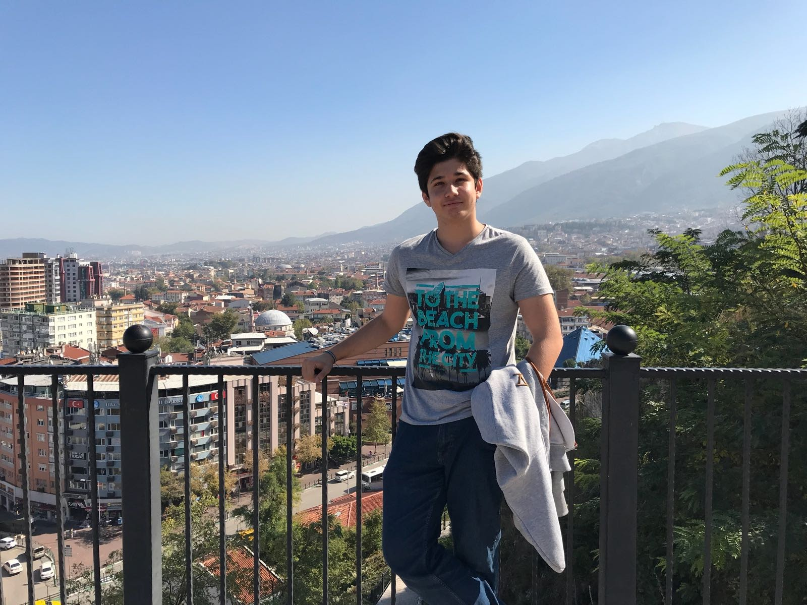
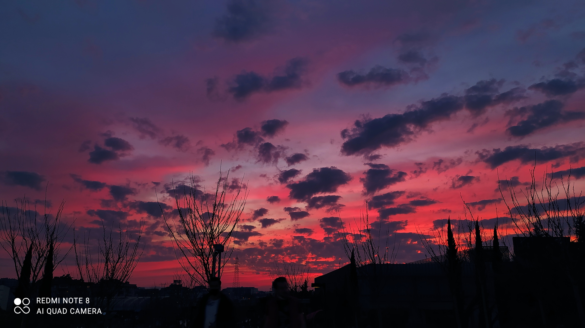
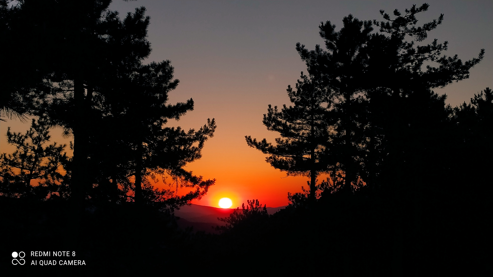
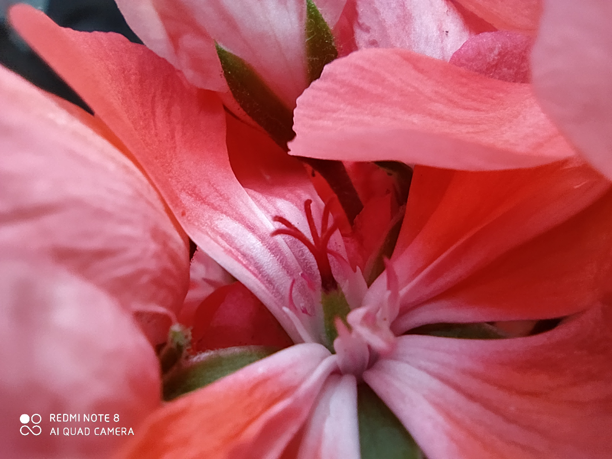

Merhaba. Ben Aytuğ. 2002 yılında Kahramanmaraş'ta doğdum. Daha sonrasında 2 yaşındayken Bursa'nın Gemlik ilçesine taşındık. 2 yaşından 6 yaşına kadar Gemlik'te yaşadıktan sonra 6 yaşında Bursa'nın Karacabey ilçesine taşındık. Burada ilkokulum olan Ömer Matlı İlköğretim okuluna başladım. (İlkokulum)
4.sınıfa kadar Ömer Matlı'da okuduktan sonra eğitim sisteminin 4-4-4 şekline dönmesiyle 5.sınıfa Karacabey İmam Hatip Ortaokuluna başladım. (Karacabey İHO) 5 ve 6.sınıfı da bu okulda okuduktan sonra Mustafakemalpaşa ilçesine taşındık.Ortaokula Mustafakemalpaşa İmam Hatip Ortaokulunda devam ettim ve buradan mezun oldum.(MKP İHO)
Mustafakemalpaşa İHO'nu birincilikle bitirdim.TEOG sınavı yerleştirmeleri sonucu İbrahim Önal Fen Lisesi'ni kazandım.(İbrahim Önal Fen Lisesi). 9.sınıfı burada okuduktan sonra naklimi Ahmet Erdem Anadolu Lisesine aldırdım. (Ahmet Erdem Anadolu Lisesi) 10 ve 11.sınıflarını burada okudum fakat 12.sınıfta üniversite sınavı odaklı çalışabilmek için açık liseye geçiş yaptım. Sonuç olarak Açık Liseden mezun oldum.
Üniversite sınavı sonucunda ise küçüklükten beri hayalim olan Bilgisayar Mühendisliği bölümünü Sakarya Üniversitesi'nde kazandım.Eğitimime Sakarya Üniversitesi'nde devam etmekteyim...
İlgi alanımın büyük bir kısmını bilgisayar kaplıyor. Yazılım,donanım,oyun her türlü şekilde ilgi alanıma giriyor. Spor olarak da birçok sporu yapıyor olmama rağmen basketbolun yeri benim için çok ayrıdır.
Küçüklüğümden beri bilgisayar hep benim ilgimi çekmiştir. Tabii en başlarda sadece bilgisayar oyunlarına ilgiliydim çünkü yazılımla tanışmamıştım. Bir şekilde yazılım ile tanışmamdan sonra hayatımın parçası oldu ve o günden beri meslek hayalim sadece Bilgisayar mühendisi olmaktı ve neredeyse sadece bunun için çalıştım. O zamanlar güzel bir bilgisayarım olmadığı için sadece uzaktan takip edebildim. Lisede bilgisayar dersi öğretmeniyle oturup uzun süre yazılım ve yapay zekadan konuşurduk ve bu benim çok hoşuma giderdi. İnternet bizim eve geç girdi çüünkü ailem hep internet olursa derslerimizi aksatacağımızı düşünüyordu. Eve internet gelince bilgisayarımın kaldırabileceği şeylerden olan html css çalışmaya başlamıştım fakat sınav senemde neredeyse her şeyi unuttum ve sonrasında tekrar başladım. Şu anda bilgisayarım daha iyi olduğu için ve üniversiteden dolayı C# ve c++ öğreniyorum. 1.sınıf bittikten sonraki hedefim ise yapay zeka ve unity üzerinden oyun yazmak olacak.Bunun için uğraşacağım.
Basketbola gelirsek 6.sınıfta başladım oynamaya. Daha öncesinde futbol takımlarında kaleci olarak oynuyordum fakat dizimdeki sakatlık beni futbolu bırakmaya zorladı ve basketbola yöneltti. Basketbolun benim için daha büyük tutku olduğunu fark etmem bu şekilde gerçekleşti. Okuduğum okullarda basket takımlarına seçildim ve bu tutkumu devam ettirdim. Şu anda biraz zor gözükse de ileride basketbol açısından da daha ilerilere gitmeyi planlıyorum.
Ayrıca manzara fotoğrafları çekmeyi çok severim. Şu anda her ne kadar profesyonel kameram olmasa da telefonla hobimi gerçekleştirmeyi çalışıyorum.